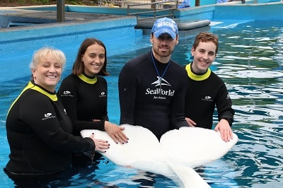

Seizing the opportunity to go abroad during my studies was something I knew I didn’t want to pass. From
my
perspective, the intercultural skills you can gain while studying abroad and educating yourself about
different cultures are a vital experience for future success in our globalized world.
After finishing my A-levels in Germany, I decided to work in the States as an au pair. That was my first
chance to experience living abroad and integrating myself into a new country and culture. Today, I
appreciate the opportunity even more: it helped me not only improve my English skills but also evoked my
interest for new countries and cultures.
Cultural diversity and inter-cultural communications was one of the major reasons for choosing the
international study program at Bali. I travelled in Thailand during my last semester holiday and met a
lot
of interesting people from all over the world, including people from Indonesia. I also heard many
fascinating stories about living and studying in Indonesia, and especially in Bali. Choosing the lovely
island of Bali was an obvious decision from then on.
During my semester abroad in Indonesia, I was able to immerse myself in the culture completely and soak
up
as much information on its culture, which is so different from the German and Western European, as
possible.
Group of students in Bali
Almost every day something excited happens and I don’t even have time to talk about it with my friends and family in Slovakia. I try to take pictures of all the things and people, but let’s be honest, the best moments can never be captured, so at least I’m keeping them as memories. I think I finally have people I can call friends, not just people who I talk to. There is one friend who I’m so close with, after not even one month it felt like we’ve known each other forever. I love Texas! Šárka exchange student from Slovakia living with the Dean family in Magnolia Texas
Hi everyone,
I’m Cecilia, I’m from Italy and right now I’m living my exchange year in a little city near Houston, in Texas. I received my host family about 7 months before my departure fromhost country and in those (really long) months I couldn’t wait to meet them because even though we only texted each other, I already felt a bit part of their family.I love spending time with my family playing board games all together, playing Mario Kart with my little host brother, making cakes with my big host brother or just watching TV and laughing together. I also like how they are teaching me a lot about American culture by going to football games or watching baseball games in TV, experiencing American traditions like Halloween or just eating typical American dishes but also how I’m teaching them something about my culture by cooking for them some of my favorite foods.
I can’t wait to see what other crazy thing I will experience with them especially Christmas full of lights, songs, hot chocolate and Christmas movies.
Cecilia
exchange student from Italyy
living with the Faragher family in Montgomery, Texas.
